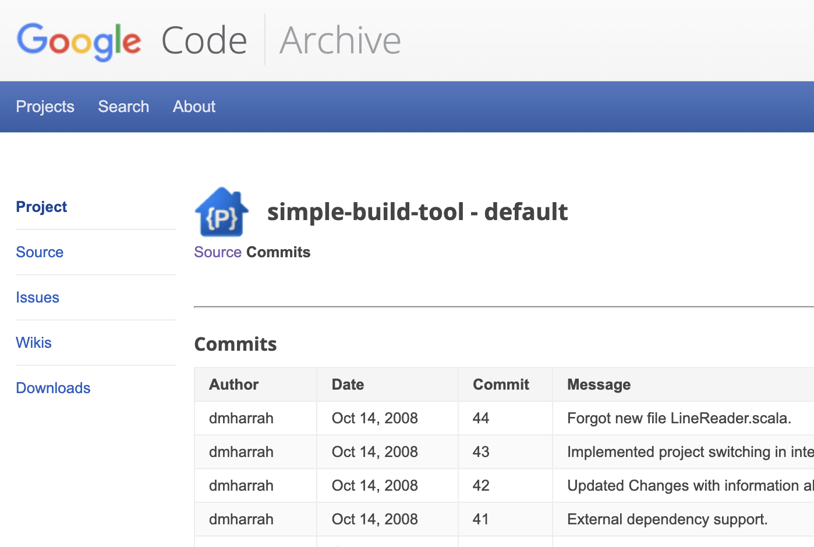
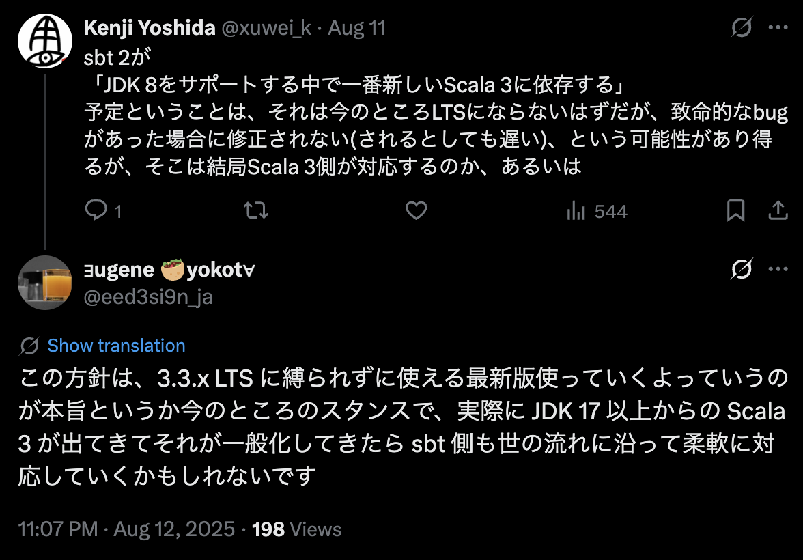

class: center, middle # <img src="https://www.scala-sbt.org/assets/sbt-logo.svg" style="display: inline-block ; zoom: 0.5" /> 2 [Scalaわいわい勉強会 6](https://scala-tokyo.connpass.com/event/371493/) 2025-11-27 --- class: middle <img src="image/xuwei.gif" alt="icon" style="zoom: 0.3" /> - X(旧twitter) [@xuwei_k](https://twitter.com/xuwei_k) - GitHub [@xuwei-k](https://github.com/xuwei-k) - blog <https://xuwei-k.hatenablog.com> - sbtのコミッターでもある - おそらく2009年くらいからScalaやってる --- class: middle ## sbt 公式ドキュメント - まだ随時更新中でそこまで完璧ではない(?) - [sbt 2変更一覧](https://www.scala-sbt.org/2.x/docs/en/changes/sbt-2.0-change-summary.html) - [1から2へのマイグレーション方法](https://www.scala-sbt.org/2.x/docs/en/changes/migrating-from-sbt-1.x.html) --- class: middle, center [Scala Days 2025での<br/>@eed3si9nさんの発表スライド](https://www.slideshare.net/slideshow/sbt-2-0-go-big-scala-days-2025-edition/282592302) <iframe src="https://www.slideshare.net/slideshow/embed_code/key/eg40W3VI6j475w" width="500" height="400" frameborder="0" marginwidth="0" marginheight="0" scrolling="no"style="border: var(--border-1) solid #CCC; border-width:1px; margin-bottom:5px; max-width:100%;"allowfullscreen></iframe> --- class: middle, center Scala Days 2025での<br/>@eed3si9nさんの発表 https://www.youtube.com/watch?v=GM2ywMb4z7A --- class: middle ## 最近の自分の貢献 - [2024年に書いたblog](https://xuwei-k.hatenablog.com/entry/2024/10/17/093457) - これ書いてから、同じような種類の貢献おそらく数倍やってる - 今日もpull reqとbug報告してた --- class: middle ## sbtとは - https://github.com/sbt/sbt - https://www.scala-sbt.org/ - Scala界隈で大昔からあるbuild tool --- class: middle ## sbtとは - 2025年11月現在、2系の安定版のリリースはまだ - 1系が主流 --- class: middle ## sbtとは - それなりにデファクトスタンダード - 使っているScalaのライブラリのGitHub見にいくと、体感8〜9割sbtでbuildされてる - eed3si9nさんの発表資料にもあるが、2023や2024年の調査でも大体そのくらい - "Scala CLI" や Mill などの他のツールもある - https://scala-cli.virtuslab.org/ - https://mill-build.org/mill/index.html --- class: middle ## sbtの開発 - https://github.com/sbt/sbt/graphs/contributors - @eed3si9nさんがずっと主要開発者 - アメリカ住んでる日本人の方 - 最初の原作者は別の人 - もう関わってない --- class: middle ## sbtの開発 - その他scalacenterの人など - 自分はおそらく全体の総合コミット数だと10位には入ってる - 直近頑張った期間に絞ると2〜3位になる - そもそもrepository複数あって正確な集計難しい --- class: middle ## 歴史 - [2009年8月 GitHubで辿れる最初のコミット？](https://github.com/sbt/sbt/commit/65fc0e0453a18017c0a995d172561f2dbb79f0d1) - 途中省略 - [2011年6月 0.10.0リリース](https://github.com/sbt/sbt/releases/tag/v0.10.0) - [2011年9月 0.11.0リリース](https://github.com/sbt/sbt/releases/tag/v0.11.0) - [2012年8月 0.12.0リリース](https://github.com/sbt/sbt/releases/tag/v0.12.0) - [2013年8月 0.13.0リリース](https://github.com/sbt/sbt/releases/tag/v0.13.0) - [2017年8月 1.0.0リリース](https://github.com/sbt/sbt/releases/tag/v1.0.0) - [2025年11月の2系の最新は2.0.0-RC7](https://github.com/sbt/sbt/releases/tag/v2.0.0-RC7) --- class: middle, center 実は最初は2008年では？ https://code.google.com/archive/p/simple-build-tool/source/default/commits?page=14 <p></p> --- class: middle - 1.xの間は大体互換を保っている - 1.0.0が2017年8月 - 今は2025年11月 --- class: middle, center 1.0.0のリリースから <span style="font-size: 200%;">8年以上経過!?</span> --- class: middle ## 重要な前提知識 - sbt自体は大半のライブラリと異なり複数のscala versionでcross buildされていない - sbt 1はScala 2.12 - 言い換えるとsbt 1のbuildファイルはScala 2.13や3で書けない --- class: middle ## 重要な前提知識 - あくまでsbt自体やpluginを作る時のversionであって、sbt 1自体はScala 3や2.13のbuildが可能 - 初心者にとってややこしいポイント - sbt 2がずっとリリースされないからScala 2.12のメンテがずっと続けられてる側面がある？ --- class: middle ## sbt 2の主な変更点 - Scala 2.12から3 - pluginをbuildし直さないと互換ない - testのtaskの変更 - デフォルトでtaskがcacheされる - taskのcacheのための変更 - common settingsなどの新機能 --- class: middle ## Scala 2.12から3 - おそらく一番重要な変更の1つ - 基本的にbuildファイルを全てScala 3で書く必要がある - buildファイルとは "なんとか.sbt" と "project/なんとか.scala" の全部 - 新機能でワイワイする前に、これとpluginの件含めて頑張って移行しないといけない --- class: middle ## pluginをbuildし直さないと<br/>互換ない - 1.0.0が出た2017年8月頃にpublishされ、その後8年以上放置されたpluginでも、今も使えていた場合があった - メンテされてないsbt pluginに依存してないか？ - sbt 2向けにpublishされてるか？されそうか？をチェック --- class: middle ## sbt 2のplugin - https://www.scala-sbt.org/2.x/docs/en/community-plugins.html - https://github.com/sbt/sbt/wiki/sbt-2.x-plugin-migration --- class: middle ## sbt 2のplugin - 発表時点の2025年11月末でpublishされてるものが60個くらい - https://github.com/xuwei-k/sbt-2-plugins/blob/main/project/plugins.sbt - xuwei-kが勝手に集めてる --- class: middle ## 2025年11月現在で<br/>未対応なpluign例 頑張ってる、あるいはpull req出てるのでそのうち対応されそう - playframework - 本体はまだだけど、関連pluginは既に対応済なもの多数 - mima - sbt-javaagent --- class: middle ### まだあまり進んでない? - scala-js - scala-native - scalapb関連 - sbt-updates - 個人的にpull req出してるが反応遅い --- class: middle ## testのtaskの変更 - testはtestQuickのaliasになりました！ --- class: middle ## testQuickとは？ - sbt 1以前から存在 - 前回失敗したか、新しく追加や変更してまだtestしてないものだけ実行 - 前回成功し、かつ変更されてないものはskip --- class: middle ## testのtaskの変更 - 今まで通り必ず全部実行するにはtestではなくtestFull - sbt 1ではUnitだったのが値を返すようになった - テスト結果を使って何かする独自task作るときに便利？ --- class: middle ## testのcache - test結果もcompile結果と同様にremote cache可能になった - gRPC対応、Bazel互換 - test結果というか、testQuickで実行するか判断するための情報、のcache - もちろんremote cacheで共有するには追加の設定が必要 - remoteではなく同じマシン上で複数同じprojectをgit checkoutしても共有される可能性 --- class: middle ## testのcache - うまく設定すればCIで影響あるtestだけ実行になってCI時間短縮？？？ - どの程度うまくいくのかは未知 - 雑にやるなら "HOME/.cache/sbt" を保存するだけでもいけるが、それはアリなのか良くわかってない - このpathはLinuxの場合でOS毎に異なる --- class: middle ## taskのcache - 任意のtaskがデフォルトでcacheされる - cacheされていいのか？はtask定義側の人間が考える必要がある - 言い換えるとtask定義に副作用があるか？ - cacheされたくない場合の記述方法が複数あり --- class: middle ## 任意のtaskがデフォルトでcacheされる - 結構攻めた変更だと思うので、慣れるまで、sbt自体やpluginが安定するまで、cache関連の問題に遭遇する可能性高い？ - cacheをclearする方法やcache使わないで実行する最低限の方法を把握しておく必要 --- class: middle ## [cacheされたくない<br/>場合の記述方法](https://www.scala-sbt.org/2.x/docs/en/reference/cached-task.html#opting-out-from-caching) - project/plugins.sbtにscalacOptions指定で一括無効化 - taskKey定義時にアノテーション - アノテーションも複数ある - taskの定義時に "Def.uncached" で囲う --- class: middle ## taskのcacheのための変更 - java.io.Fileの型がVirtualFile, VirtualFileRef, HashedVirtualFileRefなどになってる場合がよくある - それらを使ってる場合は非互換変更 - task定義時にtype classのinstance要求される場合がある --- class: middle ## VirtualFile関連 - sbt 1から存在していたがsbt 2で使われる箇所が増えた - fileConverterでjava.nio.file.Pathと相互変換可能 - [sbt.Keys内部のfileConverter定義](https://github.com/sbt/sbt/blob/v2.0.0-RC7/main/src/main/scala/sbt/Keys.scala#L289) - [FileConverterの型定義](https://github.com/sbt/zinc/blob/e41cf2d05a6c84d6d395a0b2a6facf4ffdac31f7/internal/compiler-interface/src/main/java/xsbti/FileConverter.java) --- class: middle ## cleanタスクで全てが<br/>cleanされなくなる!? - デフォルトでproject毎のtarget以外の場所にcacheされるため - Macなら $HOME/Library/Caches/sbt - Linuxなら $HOME/.cache/sbt - それ含めて全部をcleanしたい場合はcleanFull - [つい数日前に実装された](https://github.com/sbt/sbt/commit/d1e0a5a35d0105e65b4d172307714d71c1af27c8) --- class: middle ## commons settings - multi projectの場合のみ関係ある話 - project 2つ以上、ということ - top levelに設定を書いた場合の挙動が変わる - build file自体のcompile errorにはならないので注意 --- class: middle ## commons settings top levelに設定を書いた場合 - sbt 1まで: rootに対する設定 - sbt 2から: 全てのsub projectに読み込まれる設定 --- class: middle ## sbtnがデフォルトに - Graalで作られていてJVMより起動がはやい - scala-nativeではない - JVMのclientというか今までのlauncherのjarも引き続き提供される - sbt自体が全部Graalになるのではなくclient - 詳細割愛するがsbtにはserverとclientという概念がある --- class: middle ## sbtnがデフォルトに - sbt 1の時代から存在はしている - 使われるかどうか？はある意味インストール方法や起動方法によるが - [引数の渡し方に微妙に制約があるので注意](https://github.com/sbt/setup-sbt/issues/54) --- class: middle ## ivyでの依存解決機能が完全に<br/>消えてcoursierのみに - 結構前から既にデフォルトでcoursierだった - sbt 1の途中 - なぜかivy自体の依存はsbt自体に少し残ってるが - ivyの方が遅いなど色々微妙で、あえてivy使ってる人ほぼいないはずで影響少ないはず --- class: middle ## その他色々な変更や非互換 - targetディレクトリの場所の変更 - 成果物の場所が変わるので、jarなどを生成した後にsbt以外から処理してる場合変更が必要 - IntegrationTest削除 - 古いスラッシュの記法削除 --- class: middle ## projectmatrix plugin - 外部のpluginだったが組み込みになった - https://github.com/sbt/sbt-projectmatrix - scala version毎にsub projectほぼ自動で作る --- class: middle ## projectmatrix plugin - "++ 3.x" などで切り替え不要になってcompile並列可能などのメリット - これを使わないといけないわけではない - これを使わない今までの定義も普通に使える - [一部機能足りてなくて困ってるので実装されてくれ〜](https://github.com/sbt/sbt/issues/8262) --- class: middle ## その他色々な変更や非互換 - jsやnativeの %%% は %% で済むらしい？ - まだjsやnativeのpluginがリリースされてなくて実質試せないが - buildファイル変更した時のデフォルトの挙動がreloadになる - sbt queryという新機能 --- class: middle ## いつRCではない<br/>2.0.0が出るの？ - わかりません - 主要開発者のeed3si9nさん次第？ - 数ヶ月以内？(適当根拠無し予想) - もうRCなので数年かかることはないはず --- class: middle ## いつRCではない<br/>2.0.0が出るの？ - ある程度bugが直ったら？ - まだいくつかbugある --- class: middle ## まだあるbugの例 - https://github.com/sbt/sbt/issues/7722 - https://github.com/sbt/sbt/issues/8340 - https://github.com/sbt/sbt/issues/8335 - https://github.com/sbt/sbt/issues/8334 自分が報告した and 相対的に多少重要？と思ったもの雑に列挙したが、他にもある --- class: middle ## sbt自体のbuildに使う<br/>Scala 3のversionとJDK - 今のところScala 3.7.x最新 - Scala 3.7までJDK 8サポートされてる --- class: middle ## sbt自体のbuildに使う<br/>Scala 3のversionとJDK - lazy val実装でsun.misc.Unsafe使っててJDK 25以降警告出る - Scala 3.0から3.7 - Scala 2はlazy val実装にはUnsafe使ってない - sbtは一旦無理やり抑制する引数渡すようにしたっぽいが - [JDK 25での警告は他にも JEP472](https://github.com/sbt/sbt/issues/7634) - unix domain socket使うためのコード部分 --- class: middle ## sbt自体のbuildに使う<br/>Scala 3のversionとJDK - もうすぐScala 3.8出るが？ - [いま3.8.0-RC2](https://github.com/scala/scala3/releases/tag/3.8.0-RC2) - Scala 3.8はJDK 17以上必須になる予定 --- class: middle, center Scala公式の発表↓ [JDK 17 will be the next minimum version required by Scala 3 ](https://www.scala-lang.org/news/next-scala-lts-jdk.html) --- class: middle <p></p> --- class: middle ## RCと今後の互換 - sbt 2のRC使ってpublishしたpluginはRCではないsbt 2でも互換を保つ予定 - bug修正したり新機能は入るが、もう大幅な互換壊す変更は入らないはず --- class: middle ## RCと今後の互換 本格的な重要なprojectのbuild自体をsbt 2に切り替えるのは明らかにはやいが、pluginのbuild含めて色々試してもほぼ無駄にならないはず？ --- class: middle ## sbt 2のリリースのために<br/>個人的に頑張る活動 - だいぶsbt本体にpull reqした - 結構試して結構bug報告もした - 手当たり次第に(?)sbt pluginの2対応やってる - [scala-stewardの対応](https://github.com/scala-steward-org/scala-steward/issues/3685) --- class: middle ## sbt 2を試して貢献しよう - 少しでもいいから気が向いたら試してくれ〜 - 何かあればScalaワイワイのDiscordやTwitterなどで聞いてくれれば可能な範囲でこたえます --- class: middle ## おわり